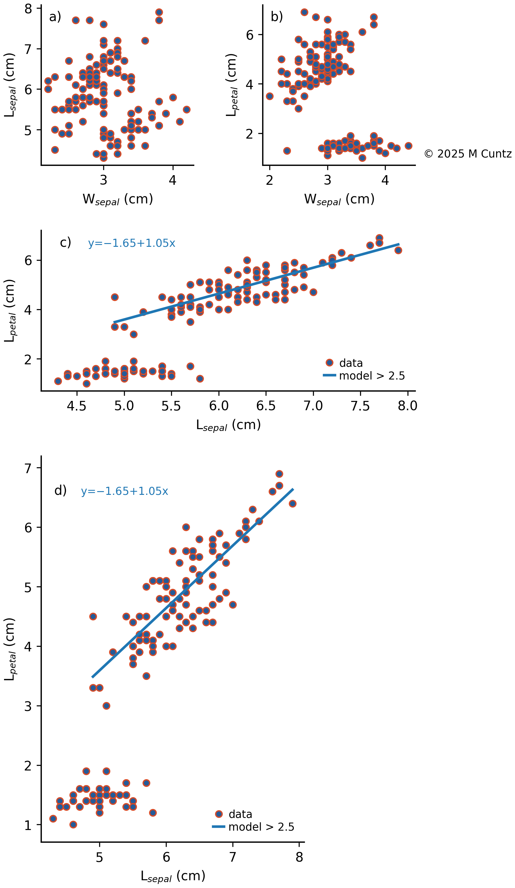
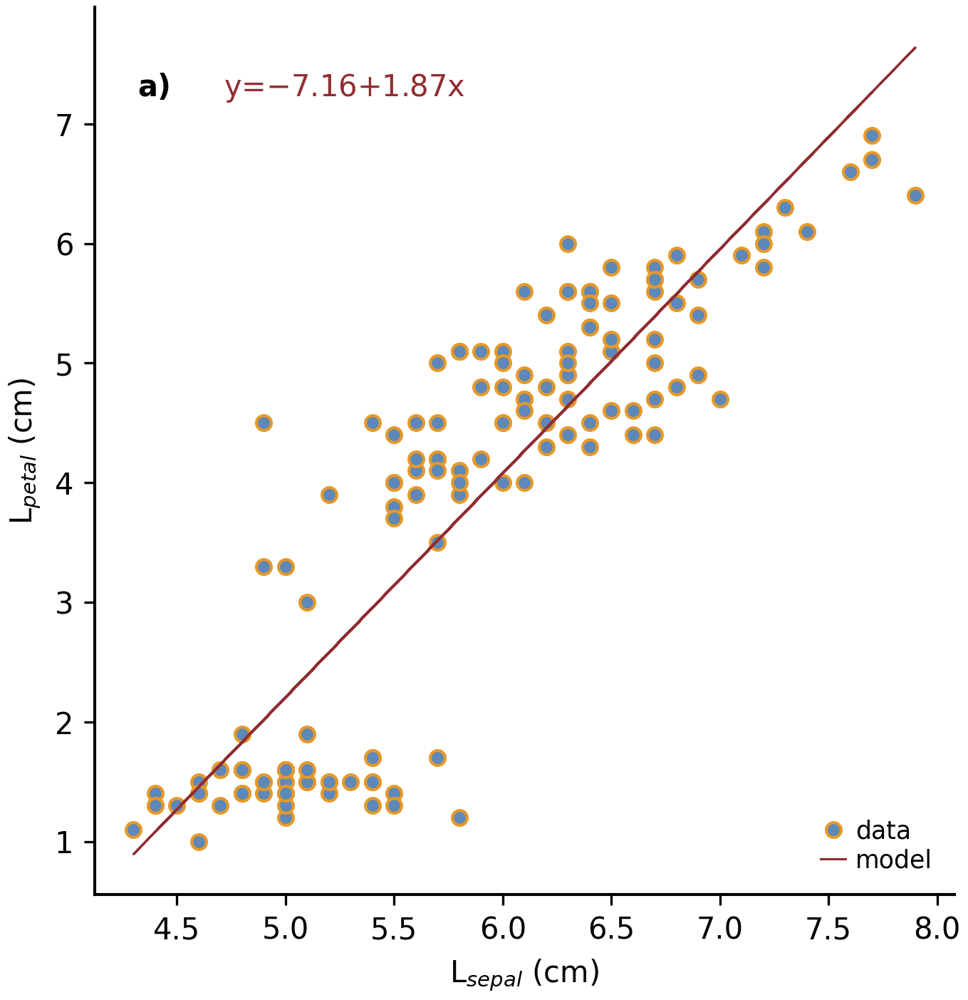
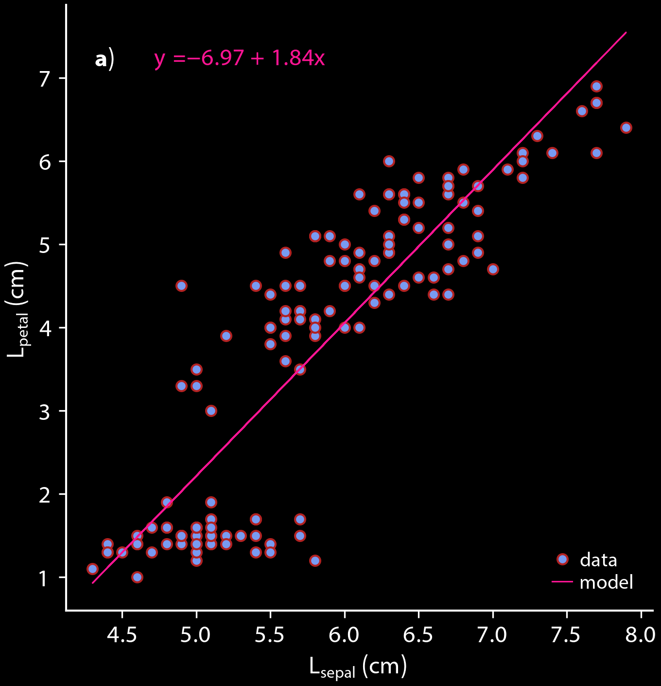

Commented Example#
Here is a fully commented example that uses most of the class and
functions of mcplot. It reads a file with pandas that can be
written as:
import numpy as np
import pandas as pd
# Get iris data set for test
url = "https://raw.githubusercontent.com/uiuc-cse/data-fa14/gh-pages/data/iris.csv"
df = pd.read_csv(url)
# Set some data points to missing data
miss = -9999.
ndata = df.shape[0]
rng = np.random.default_rng()
df.loc[rng.integers(0, ndata, 10), 'sepal_length'] = miss
df.loc[rng.integers(0, ndata, 10), 'sepal_width'] = miss
# Write into csv file
ifile = 'mcplot_iris.csv'
df.to_csv(ifile, index=False)
Example using mcPlot#
# file: mcplot_example.py
import numpy as np
import pandas as pd
from mcplot import mcPlot
class myPlot(mcPlot):
#
# init
#
def __init__(self, *args, **kwargs):
"""
Initialise the instance
The following methods are called on initialisation of mcPlot:
* the command line arguments are gathered if at least one of
the arguments `desc` or `argstr` is given:
get_command_line_arguments()
* the output type (self.outtype) is set and additional modules
are loaded if necessary: set_output_type()
* standard class variables for layout options, etc. are set:
set_layout_options()
* global rcParams are set for Matplotlib using the class variables
set in set_layout_options(): set_matplotlib_rcparams()
* the output filename is set, the output file is opened (if required),
and possible html headers or menus are written: plot_begin()
"""
super().__init__(*args, **kwargs)
# Set some user-defined layout options overwriting the defaults
self.set_extra_layout_options()
# If plot and layout options were changed, it is a good idea to
# update the rcParams as well, i.e. set_matplotlib_rcparams()
# should be called. This sets, for example, the (newly-defined)
# background color and the like.
self.set_matplotlib_rcparams()
#
# Class variables
#
def set_extra_layout_options(self):
"""
Set some class variables that can be used for plotting.
Some class variables are used in set_matplotlib_rcparams() to
set other defaults.
"""
from mcplot.color import get_cmap, get_color
# Set layout and spaces
self.nrow = 4 # # of rows of subplots per figure
self.ncol = 3 # # of columns of subplots per figure
self.hspace = 0.09 # x-space between subplots
self.vspace = 0.06 # y-space between subplots
if self.usetex:
self.textsize = 12 # standard text size in LaTeX mode
else:
self.textsize = 10 # standard text size w/o LaTeX
# Set come line and marker properties
self.lw = 1.5 # linewidth
self.ms = 5.0 # marker size
self.mew = 1.0 # marker edge width
# Set come colors
if self.dowhite:
# A brighter color map on black background.
# delete starting white, black, and pink from palette
self.mcols = get_cmap('ncl_amwg')[3:]
else:
# A darker color map on white background.
# delete starting white, black, and pink from palette
self.mcols = get_cmap('mcplot_amwg')[3:]
self.mcol1 = self.fgcolor # black or white
self.mcol2 = self.mcols[-1] # red
self.mcol3 = get_color('grey') # grey
self.mcol4 = self.mcols[2] # light blue
self.mcol5 = self.mcols[-3] # orange
self.lcol1 = self.mcol1
self.lcol2 = self.mcol2
self.lcol3 = self.mcol3
self.lcol4 = self.mcol4
self.lcol5 = self.mcol5
self.lcols = self.mcols
# Set legend properties
self.loc = 'lower right'
self.xbbox = 1. # x-data of corner of self.loc
self.ybbox = 0. # y-data of corner of self.loc
self.labelspacing = 0.2 # spacing between rows in legend
self.columnspacing = 1. # spacing between columns in legend
self.handletextpad = 0.4 # pad between the legend handle and text
self.handlelength = 1.0 # length of the legend handles
#
# Read data
#
def read_data(self):
"""
The command line arguments are in the list self.cargs.
This can be used to pass, e.g. filenames to read, etc.
"""
ifiles = self.cargs
# Check that exactly one input file given
if len(ifiles) == 0:
raise IOError('One input file must be given')
elif len(ifiles) > 1:
raise IOError('Only one input file should be given')
ifile = ifiles[0]
# Read DataFrame from mcplot_iris.csv produced in the __main__
# section, setting self.miss to NaN (from the new command line
# option -m added in the __main__ section below)
self.df = pd.read_csv(ifile, na_values=[self.miss])
#
# Figure 1
#
def plot_fig_1(self):
import matplotlib.pyplot as plt
from numpy.polynomial import polynomial as P
# get dimensions of new Axes for Figure.add_axes
from mcplot import position
# convert strings to strings with LaTeX formatting
from mcplot import str2tex
# put text on plot
from mcplot import text2plot
# add a), b), c) to plot
from mcplot import abc2plot
# put '(C) YYYY itext' on plot
from mcplot import signature2plot
# open new figure, increasing figure counter
self.ifig += 1
# iplot is the number of plot within the (nrow, ncol) subplots
iplot = 0
# iplot is the panel number used in putting a), b), c), ... on the plot
iabc = 0
print(f' Open figure {self.ifig}')
fig = plt.figure(self.ifig)
#
# Regular panel 1
#
# petal_length vs. sepal_length
iplot += 1
iabc += 1
x = self.df['sepal_length']
y = self.df['petal_length']
# None = free scaling
xlim = None
ylim = None
# Use raw string for Matplotlib's LaTeX-like notation.
# str2tex converts it into full LaTeX math notation used by
# matplotlib's usetex keyword. Takes care, for example, that the
# pdf engine actually uses the full LaTeX notation,
# e.g. \newline vs. \n in Matplotlib.
# \textnormal{} is LaTeX and not in Matplotlib so only used
# if user sets -u, which sets self.usetex = True.
if self.usetex:
xlab = str2tex(r'L$_\textnormal{sepal}$ (cm)', usetex=self.usetex)
ylab = str2tex(r'L$_\textnormal{petal}$ (cm)', usetex=self.usetex)
else:
xlab = str2tex(r'L$_{sepal}$ (cm)', usetex=self.usetex)
ylab = str2tex(r'L$_{petal}$ (cm)', usetex=self.usetex)
# Make subplots using add_axes.
# This is equivalent to using subplot with Gridspec.
# position returns (left, bottom, width, height) in figure coordinates
# (0-1). The counter `iplot` goes from left to right and from top to
# bottom, expect if `sortcol=True` where first columns then plots will
# be filled.
pos = position(self.nrow, self.ncol, iplot,
hspace=self.hspace, vspace=self.vspace)
ax = fig.add_axes(pos, label=str(iplot))
# Plot markers. Plot returns list of line2D objects, which is added to
# larr to collect all line objects for a possible legend.
larr = []
tarr = []
larr += ax.plot(x, y)
plt.setp(larr[-1], linestyle='None',
marker='o', markeredgecolor=self.mcol5,
markerfacecolor=self.mcol4,
markersize=self.ms, markeredgewidth=self.mew)
# add a possible legend entry to list tarr
tarr += [str2tex('data', usetex=self.usetex)]
# Put a), b), c), ... on plot.
# The panel counter can be upper- or lower letters,
# arabic or roman number, or `iabc` can be treated as string.
# The counter can have parentheses, brackets or braces before and
# after. It can be italic or boldface.
abc2plot(ax, self.dxabc, self.dyabc, iabc, lower=True, bold=False,
parentheses='close', usetex=self.usetex, mathrm=True)
abc2plot(ax, 3. * self.dxabc, 0.8 * self.dyabc, iabc, upper=True,
bold=False, parentheses='open', usetex=self.usetex,
mathrm=True)
abc2plot(ax, 5. * self.dxabc, 0.6 * self.dyabc, iabc, lower=True,
bold=True, roman=True, parentheses='both', usetex=self.usetex)
abc2plot(ax, 7. * self.dxabc, 0.4 * self.dyabc, iabc, upper=True,
roman=True, brackets='close', usetex=self.usetex, mathrm=True,
italic=True)
abc2plot(ax, 9. * self.dxabc, 0.2 * self.dyabc, iabc, lower=True,
bold=False, braces='both', usetex=self.usetex, mathrm=False)
abc2plot(ax, 11. * self.dxabc, 0.05 * self.dyabc, f'I am panel {iabc}',
string=True, bold=False, braces='both', usetex=self.usetex,
mathrm=True, italic=True)
# Final axes layout.
# Labels are set if not empty.
# Axes limits are only set if not None.
if xlab != '':
plt.setp(ax, xlabel=xlab)
if ylab != '':
plt.setp(ax, ylabel=ylab)
ax.grid(False)
ax.spines['right'].set_color('none')
ax.spines['top'].set_color('none')
if xlim is not None:
plt.setp(ax, xlim=xlim)
if ylim is not None:
plt.setp(ax, ylim=ylim)
#
# Large Panel 2
#
# petal_length vs. petal_width
iplot += 1
iabc += 1
x = self.df['petal_width']
y = self.df['petal_length']
xlim = None
ylim = None
if self.usetex:
xlab = str2tex(r'L$_\textnormal{sepal}$ (cm)', usetex=self.usetex)
ylab = str2tex(r'W$_\textnormal{sepal}$ (cm)', usetex=self.usetex)
else:
xlab = str2tex(r'L$_{sepal}$ (cm)', usetex=self.usetex)
ylab = str2tex(r'W$_{sepal}$ (cm)', usetex=self.usetex)
# We want to span two figure columns on the same row.
# Here we do this by hand: get panel coordinates of the next two
# panels, and combine the distance between the left edges plus the
# width of the second panel to with of `rect`
# (left, bottom, width, height).
pos1 = position(self.nrow, self.ncol, iplot,
hspace=self.hspace, vspace=self.vspace)
pos2 = position(self.nrow, self.ncol, iplot + 1,
hspace=self.hspace, vspace=self.vspace)
pos = [pos1[0], pos1[1], pos2[0] - pos1[0] + pos2[2], pos1[3]]
ax = fig.add_axes(pos, label=str(iplot))
mark1 = ax.plot(x, y)
plt.setp(mark1, linestyle='None',
marker='o', markeredgecolor=self.mcol5,
markerfacecolor=self.mcol4,
markersize=self.ms, markeredgewidth=self.mew)
# Put a copyright on the plot '(C) YYYY itext'.
# The text right-aligned by default if not given otherwise
# (horizontalalignment).
signature2plot(ax, 0.98, 0.05, 'M Cuntz', usetex=self.usetex,
small=True, italic=False, mathrm=False)
# increase number in (nrow, ncol) subplots because we used two subplots
iplot += 1
#
# Large Panel 3
#
iplot += 1
iabc += 1
# If you want to have double the figure width (instead of two figure
# columns), just change the width in `rect`.
pos = position(self.nrow, self.ncol, iplot,
hspace=self.hspace, vspace=self.vspace)
pos[2] = pos[2] * 2.
ax = fig.add_axes(pos, label=str(iplot))
# Plot markers
larr = []
tarr = []
larr += ax.plot(x, y)
plt.setp(larr[-1], linestyle='None',
marker='o', markeredgecolor=self.mcol5,
markerfacecolor=self.mcol4,
markersize=self.ms, markeredgewidth=self.mew)
tarr += [str2tex('data', usetex=self.usetex)]
# Add trend line
xx = x.to_numpy()
yy = y.to_numpy()
ii = ~np.isnan(xx)
xx = xx[ii]
yy = yy[ii]
p = P.polyfit(xx, yy, 1)
pyy = P.polyval(xx, p)
larr += ax.plot(xx, pyy)
plt.setp(larr[-1], linestyle='-', linewidth=self.lw / 2.,
marker='None', color=self.mcol2)
tarr += [str2tex('model', usetex=self.usetex)]
# Write equation on plot.
# to have correct minus symbol
s0 = r'$-$' if p[0] < 0 else ''
s1 = r'$-$' if p[1] < 0 else '+'
noteq = rf'y={s0}{abs(p[0]):.2f}{s1}{abs(p[1]):.2f}x'
# # Another possibility is to set the whole equations in $...$
# # but this uses more space and the second sign still has to be
# # chosen beforehand.
# s1 = '-' if p[1] < 0 else '+'
# teq = str2tex(rf'$y={p[0]:.2f}x{s1}{abs(p[1]):.2f}$',
# usetex=self.usetex)
#
# Put the equation as text on plot.
# One can set one of the sizes xxsmall, xsmall, small, medium, large,
# xlarge, xxlarge to True. Also bold and italic can be set to true.
# All other keywords will be passed to Matplotlib's Axes.text() such
# as `color` here.
# You can either use a string such as noteq and set usetex=True
text2plot(ax, self.dxabc, self.dyabc, noteq, color=self.mcol2,
small=True, usetex=self.usetex)
# or you can transform noteq to a LaTeX string first using str2tex
teq = str2tex(noteq, usetex=self.usetex)
# and then put it on the plot without usetex.
text2plot(ax, self.dxabc, 0.8 * self.dyabc, teq, color=self.mcol2,
small=True)
# Add legend using the two list of lines (larr) and text (tarr).
# loc and bbox_to_anchor behave slightly different for different
# fontsizes.
ll = ax.legend(larr, tarr,
frameon=self.frameon, ncol=1,
labelspacing=self.labelspacing,
handletextpad=self.handletextpad,
handlelength=self.handlelength,
columnspacing=self.columnspacing,
loc=self.loc,
bbox_to_anchor=(self.xbbox, self.ybbox),
scatterpoints=1, numpoints=1,
fontsize='small')
# Final axes layout
if xlab != '':
plt.setp(ax, xlabel=xlab)
if ylab != '':
plt.setp(ax, ylabel=ylab)
ax.grid(False)
ax.spines['right'].set_color('none')
ax.spines['top'].set_color('none')
if xlim is not None:
plt.setp(ax, xlim=xlim)
if ylim is not None:
plt.setp(ax, ylim=ylim)
# increase subplot number
iplot += 1
#
# Large Panel 4
#
iplot += 1
iabc += 1
# One can also imagine different numbers of rows and columns,
# so that the panel will have a different size.
# This is done in the example for axis margins in Matplotlib's gallery
# https://matplotlib.org/stable/gallery/subplots_axes_and_figures/axes_margins.html
# For example, half the number of rows will give double the height
# of a panel. iplot has to be adjusted accordingly.
pos = position(self.nrow // 2, self.ncol - 1, iplot - self.ncol,
hspace=self.hspace, vspace=self.vspace)
ax = fig.add_axes(pos, label=str(iplot))
# Plot markers
mark1 = ax.plot(x, y)
plt.setp(mark1, linestyle='None',
marker='o', markeredgecolor=self.mcol5,
markerfacecolor=self.mcol4,
markersize=self.ms, markeredgewidth=self.mew)
# iabc has still the right count
abc2plot(ax, self.dxabc, self.dyabc, iabc, upper=True, bold=True,
parentheses='both', usetex=self.usetex, mathrm=True)
# Final axes layout
if xlab != '':
plt.setp(ax, xlabel=xlab)
if ylab != '':
plt.setp(ax, ylabel=ylab)
ax.grid(False)
ax.spines['right'].set_color('none')
ax.spines['top'].set_color('none')
if xlim is not None:
plt.setp(ax, xlim=xlim)
if ylim is not None:
plt.setp(ax, ylim=ylim)
# Show plot or write it into file, adding a link to the image file into
# a possible html file.
self.plot_save(fig)
#
# Figure 2
#
def plot_fig_2(self):
import matplotlib.pyplot as plt
from numpy.polynomial import polynomial as P
from mcplot import position
from mcplot import str2tex
from mcplot import text2plot
from mcplot import abc2plot
# new figure
self.ifig += 1
iplot = 0
iabc = 0
print(f' Open figure {self.ifig}')
fig = plt.figure(self.ifig)
#
# One big panel
#
# petal_length vs. sepal_length
iplot += 1
iabc += 1
x = self.df['sepal_length']
y = self.df['petal_length']
xlim = None
ylim = None
if self.usetex:
xlab = str2tex(r'L$_\textnormal{sepal}$ (cm)', usetex=self.usetex)
ylab = str2tex(r'L$_\textnormal{petal}$ (cm)', usetex=self.usetex)
else:
xlab = str2tex(r'L$_{sepal}$ (cm)', usetex=self.usetex)
ylab = str2tex(r'L$_{petal}$ (cm)', usetex=self.usetex)
# We make one panel spanning two rows and two columns by hand.
# First panel in the upper left corner
pos1 = position(self.nrow, self.ncol, iplot,
hspace=self.hspace, vspace=self.vspace)
# The second panel is one row down and one column to the right
pos2 = position(self.nrow, self.ncol, iplot + self.ncol + 1,
hspace=self.hspace, vspace=self.vspace)
# `rect` (left, bottom, width, height)
pos = [pos1[0], pos2[1], # left from panel 1, bottom from panel 2
pos2[0] - pos1[0] + pos2[2], # height
pos1[1] - pos2[1] + pos1[3]] # width
ax = fig.add_axes(pos, label=str(iplot))
# Plot markers
larr = []
tarr = []
larr += ax.plot(x, y)
plt.setp(larr[-1], linestyle='None',
marker='o', markeredgecolor=self.mcol5,
markerfacecolor=self.mcol4,
markersize=self.ms, markeredgewidth=self.mew)
tarr += [str2tex('data', usetex=self.usetex)]
# Add trend line
xx = x.to_numpy()
yy = y.to_numpy()
ii = ~np.isnan(xx)
xx = xx[ii]
yy = yy[ii]
p = P.polyfit(xx, yy, 1)
pyy = P.polyval(xx, p)
larr += ax.plot(xx, pyy)
plt.setp(larr[-1], linestyle='-', linewidth=self.lw / 2.,
marker='None', color=self.mcol2)
tarr += [str2tex('model', usetex=self.usetex)]
# Equation on plot
s0 = r'$-$' if p[0] < 0 else ''
s1 = r'$-$' if p[1] < 0 else '+'
noteq = rf'y={s0}{abs(p[0]):.2f}{s1}{abs(p[1]):.2f}x'
text2plot(ax, 3. * self.dxabc, self.dyabc, noteq, color=self.mcol2,
medium=True, usetex=self.usetex)
# a), b), c), ...
abc2plot(ax, self.dxabc, self.dyabc, iabc, lower=True, bold=True,
parentheses='close', usetex=self.usetex, mathrm=True)
# Legend
ll = ax.legend(larr, tarr,
frameon=self.frameon, ncol=1,
labelspacing=self.labelspacing,
handletextpad=self.handletextpad,
handlelength=self.handlelength,
columnspacing=self.columnspacing,
loc=self.loc,
bbox_to_anchor=(self.xbbox, self.ybbox),
scatterpoints=1, numpoints=1,
fontsize='small')
# Axes layout
if xlab != '':
plt.setp(ax, xlabel=xlab)
if ylab != '':
plt.setp(ax, ylabel=ylab)
ax.grid(False)
ax.spines['right'].set_color('none')
ax.spines['top'].set_color('none')
if xlim is not None:
plt.setp(ax, xlim=xlim)
if ylim is not None:
plt.setp(ax, ylim=ylim)
# increase subplot number
iplot += self.ncol + 1
# Save fig
self.plot_save(fig)
#
# Main
#
if __name__ == '__main__':
import argparse
# Extra command line argument -m to be called as:
# -m '-9999' or --missing=-9999
# The parser must have `add_help=False`!
miss = -9999.
parser = argparse.ArgumentParser(add_help=False)
parser.add_argument('-m', '--missing', action='store',
default=miss, dest='miss', type=float,
metavar='missing_value',
help=(f'Data treated as missing value in'
f' input file (default: {miss}).'))
# New instance of myPlot. This also gets the command line arguments,
# to be called for example as:
# python mcplot_example.py -t pdf -o ex.pdf mcplot_iris.csv
desc = 'Full commented example of mcPlot'
argstr = 'input_file'
iplot = myPlot(desc, argstr, parents=parser)
# Reading data.
# read the input file given on the command line
iplot.read_data()
# Plot
iplot.plot_fig_1()
# Another figure, PNG file, or PDF page
iplot.plot_fig_2()
# Finish.
# close any open plot files
iplot.close()
This script can be called from the command line given mcplot_iris.csv as the argument, opening on screen windows:
python mcplot_example.py mcplot_iris.csv
plot into a PDF file mcex.pdf:
python mcplot_example.py -t pdf -o mcex.pdf mcplot_iris.csv
save PNG files mcex_0001.png and mcex_0002.png:
python mcplot_example.py -t png -o mcex_ mcplot_iris.csv
save the PNG files with a black background (and white foreground) in high resolution:
python mcplot_example.py -t png -o mcex_ -w --dpi 600 mcplot_iris.csv
The test PNG files with the pretty arbitrary plots are:
{kind=link}
and:
{kind=link}
And the latter with the -w command line option is:
{kind=link}